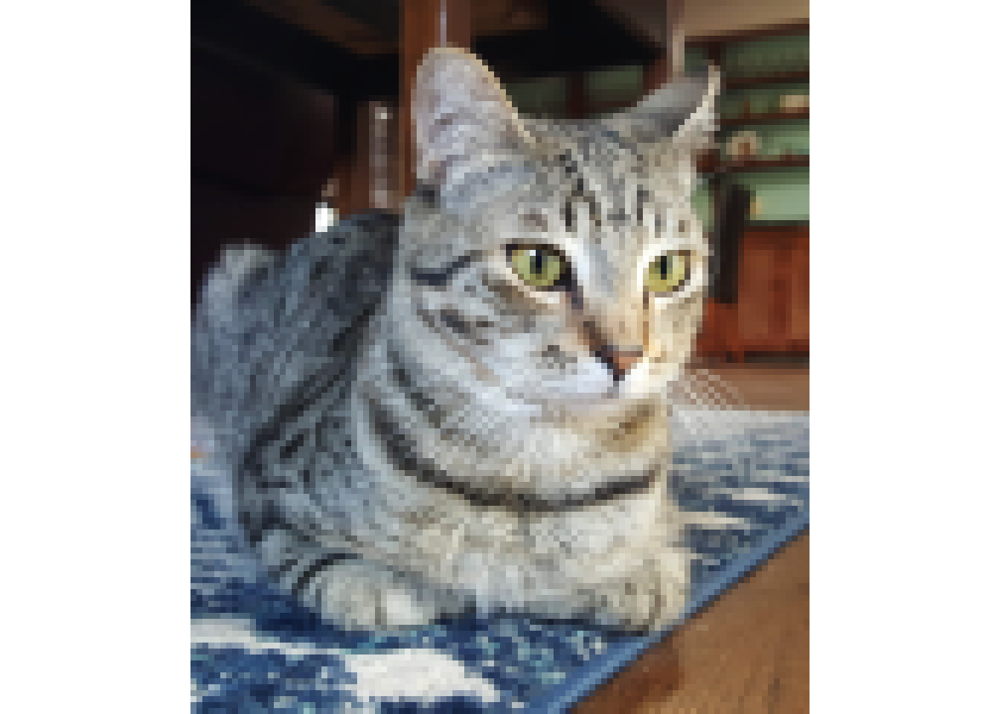
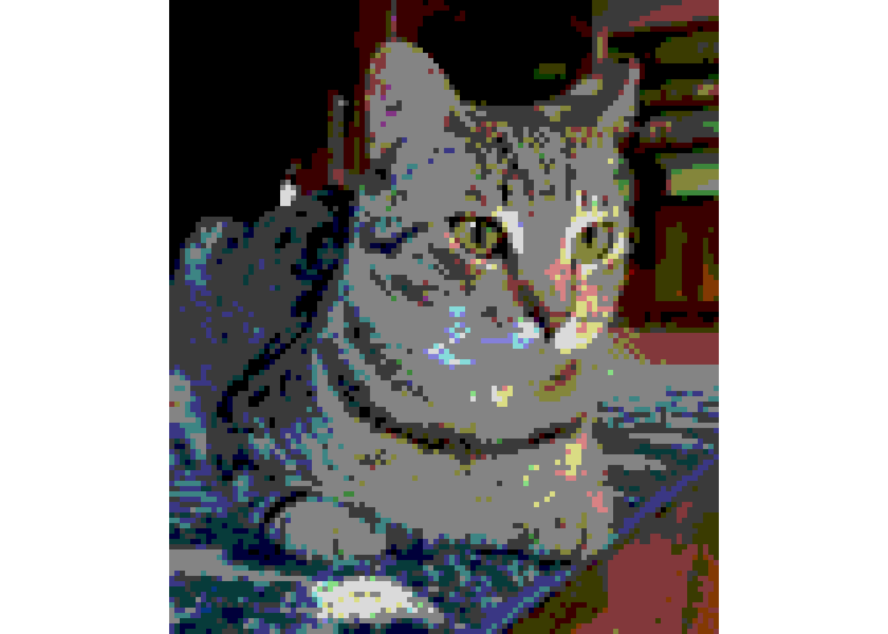
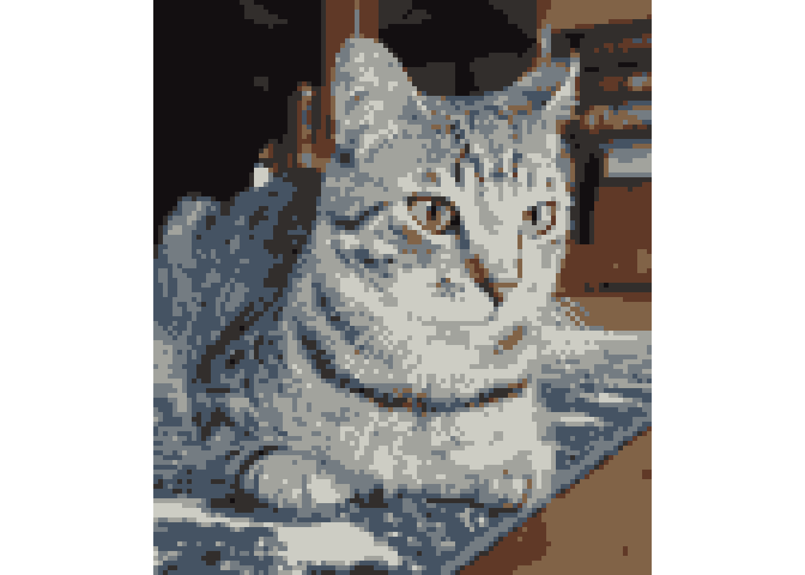
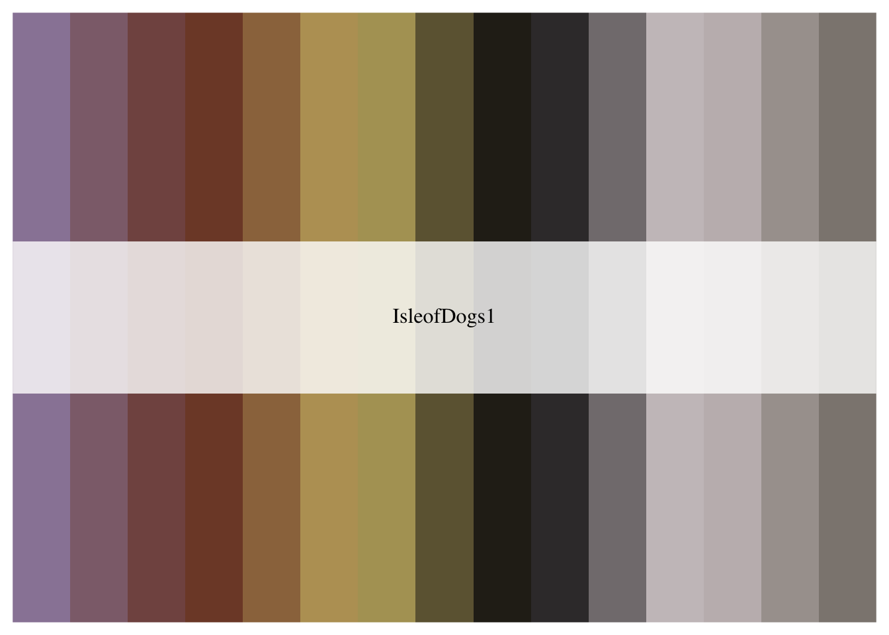
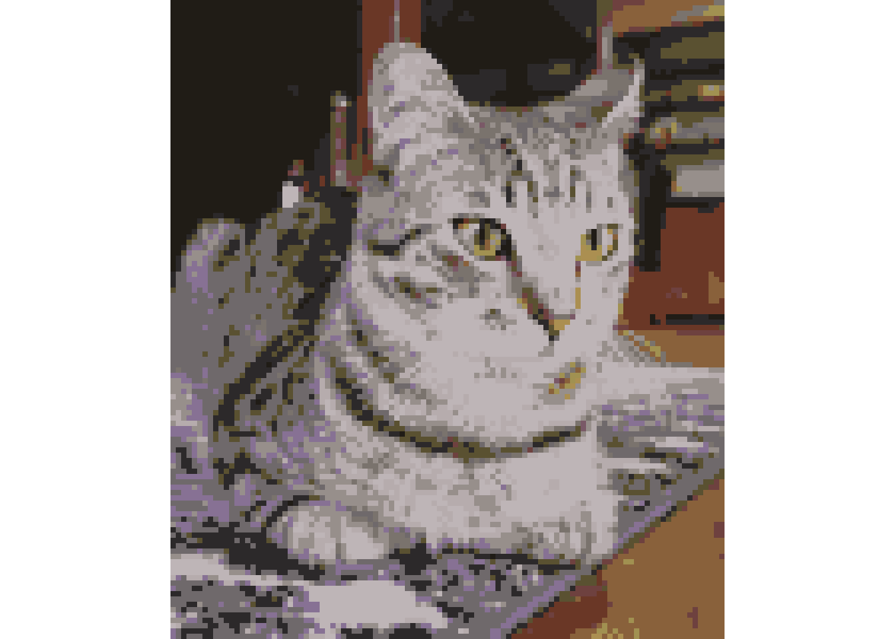
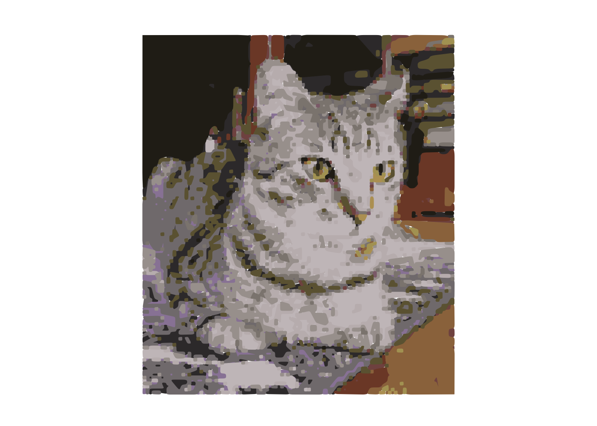
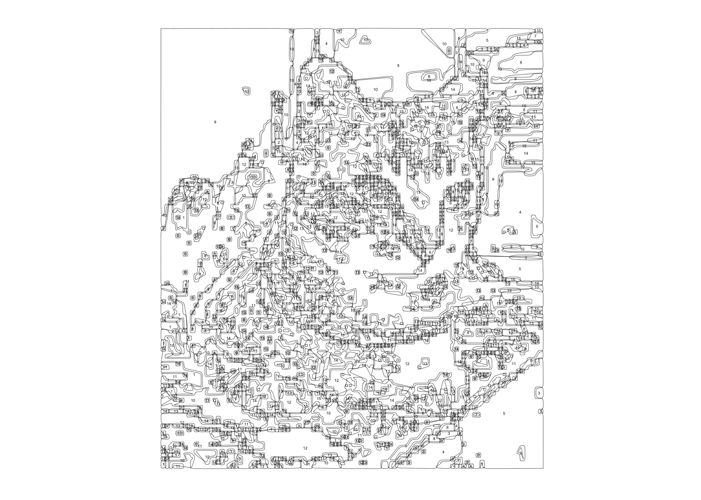

2 Auto-generating Paint-by-Numbers Instructions
2.1 Introduction
This project aims to convert an image (e.g., of my cat) into paint-by-number instructions. This involves:
reducing the number of colors down to a reasonable number, i.e. reducing the 16+ million colors possible with 8-bit images down to like 10-15,
converting raster data into polygons based on those limited colors, and
saving those resulting polygons with their color IDs as printable and readable instructions.
This document follows the adventure of getting it all to work.
2.2 Packages being used
The packages we load are all on CRAN. raster has handy functions for handling and viewing images, sf and smoothr help with handling the polygons, and tidyverse has general grammar for tidy data manipulation. Disclaimer: there are probably more packages out there that do similar things, but I'm coming from a geospatial day job and I'm using these packages since there are already familiar to me. Other packages needed for dependencies are rgdal and rgeos.
library(raster)
library(sf)
library(tidyverse)
library(smoothr)
library(units)
library(ggthemes) # add to text above
library(wesanderson)
library(rdist)2.3 Step 1: Reading in the image
img <- brick("../images/byxbee_loaf.jpg") %>%
aggregate(25) # reducing the resolution up front to save time
plotRGB(img)
2.4 Step 2: Reducing the number of colors
2.4.1 Attempt 1: just rounding the individual RGB values
cutoff <- 75 # number to rount to
rounded_img <- img # make a copy of the orignal image object
values(rounded_img) <- values(img) %>% # extract values from image (strip spatial component)
as_tibble() %>% #converting the matrix to tibble for tidy data manipulation
mutate_all(~cutoff*floor(./cutoff)) %>% # overwrite all values to rounded down values to cutoff
as.matrix() # convert back to matrix
plotRGB(rounded_img)
Well it worked in that we can still see the cat and there are <20 unique colors, but its not the ideal result.
2.4.2 Attempt 2: using kmeans clustering
N <- 8 # number of colors
img_clust <- values(img) %>%
kmeans(N, iter.max = 50)
centroids_img <- img
values(centroids_img) <- img_clust$cluster %>%
enframe(name = NULL) %>%
left_join(img_clust$centers %>%
as_tibble(rownames = "value") %>%
mutate(value = as.numeric(value))) %>%
mutate_all(~round(.,0)) %>%
as.matrix()
plotRGB(centroids_img[[-1]]) # I'm skipping the first layer that contains the cluster ID
That's a bit better. But what if we have a set palette we want to use?
2.4.3 Attempt 3: specifying a palette first
I haven't tried this yet, but the plan is to see if we can split the colors from the image into a pre-defined set of colors. Maybe cool ones like the Wes Anderson pallete or matching to paint sets to make painting the printed result more feasible.
An initial attempt with the Isle of Dogs palette:
N <- 15 # number of colors
(wes_pal <- wes_palette("IsleofDogs1", N, type = "continuous"))
wes_rgb <- wes_pal[1:N] %>%
col2rgb() %>%
t()
img_wes <- values(img) %>%
cdist(wes_rgb) %>%
as_tibble() %>%
rowwise() %>%
mutate(cluster = which.min(c_across(everything()))) %>%
pull(cluster)
def_pal_img <- img
values(def_pal_img) <- img_wes %>%
enframe(name = NULL) %>%
left_join(wes_rgb %>%
as_tibble(rownames = "value") %>%
mutate(value = as.numeric(value))) %>%
mutate_all(~round(.,0)) %>%
as.matrix()
plotRGB(def_pal_img[[-1]])
2.5 Step 3: Converting the image into polygons of the same color
poly_img <- rasterToPolygons(def_pal_img$value,
dissolve = TRUE,
digits = 0)st_img <- poly_img %>%
st_as_sf() %>%
st_buffer(5) %>%
st_simplify(TRUE,dTolerance = 15) %>% #simplifies lines by removing vertices
#drop_crumbs(threshold = 10 ) %>% # these sound applicable but I keep getting error messages!
#fill_holes(threshold = 10) %>%
smooth(method = "ksmooth", smoothness = 0.5) %>%
st_cast("POLYGON")
# clust_cols <- img_clust$centers %>%
# as_tibble(rownames = "value") %>%
# mutate(hex = rgb(byxbee_loaf.1/255,byxbee_loaf.2/255,byxbee_loaf.3/255)) %>%
# pull(hex)
#
# img_pal <- function(n){
# return(clust_cols[1:n])
# }
# Try to visualize what the painting would look like
st_img %>%
plot(pal = wes_pal[1:N],breaks=0:15, # use the palette from the previous section
border = NA, # no polygon outlines
key.pos=NULL, # no legend
main = NULL) # no title
So now we need to print the instructions and make sure they are readable on a standard printer paper to make things easy for people. I'm switching to ggplot plotting because it's easier to customize visualizations.
st_img %>%
ggplot() +
geom_sf(fill = NA,
color = "black", # draw lines for polygons
size = 0.1) + # fine lines
geom_sf_text(aes(label = value), # label color ID per polygon
size = 1) +
theme_map() # no axes or anything like that
This seems like a lot of polygons! We will have to iteratively tweak our simplifications.
2.6 Future expansions:
Consider using a machine learning classification approach?
Have an option to split skinny images (e.g. panoramic photos) into multiple pages of instructions, which would be helpful for breaking up mural instructions
Have an option to have a grid included on the instructions in case people need to transfer the outlines to a large area, e.g. a wall for a mural
Have an option to fit a custom piece of paper